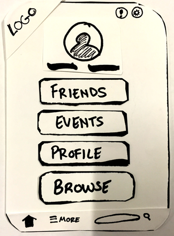

Magi Gift-Giving App
Creating a mobile solution for Anthony's problem.
Year: 2015

Year: 2015
The first project, introduced almost as soon as our first key terms for the UX process, involved identifying a problem with a partner, and designing a mobile app to solve that problem. Interviewing Anthony, after learning interview techniques minutes before, was a fascinating process of learning not to lead the user and to allow their authentic thoughts and experiences to emerge. I found out that he cares a great deal about his family, especially his wife, and that he puts a lot of effort into finding unique gifts for her.
There have been several attempts at making gift-recommendation and organization apps in the past. Without the constraints of technological ability or legal responsibility, though, I designed an app that would mimic Pinterest as a delight-in-discovery platform. Anthony liked browsing for ideas as much as he enjoyed finding the perfect, unique gift, and so I wanted to give him the opportunity to do both.
I approached this project with the mindset of learning how to interview users to extract the most useful information possible, and how to listen actively and apply findings. As I learned more about the UX process, I realized that a more intuitive way to being this project would be breaking the app physically down to components with scissor and paper. Proceeding accordingly, I was able to better visualize the modular components necessary to build a good user experience.
The process centered around sketching and analog tools. Eventually, I made a clickable prototype in the Pop app for usability testing. I learned quickly that UX and design are iterative at their core, and revolve around scrapping ideas completely in favor for better ones.
The deliverables for the Magi App included a clickable prototype made in the Pop app, user flows, and modular paper prototypes. Learning objectives reached included learning to interview, learning how to sketch websites and mobile apps and turn those ideas into prototypes, using a tool for creating clickable prototypes, and understanding how to glean useful usability information from crude, quickly rendered sketches.
You can reach me through any of these methods. If you get lost, please call!
sthelmerich@live.com (704)881-2909 stacey.helmerich